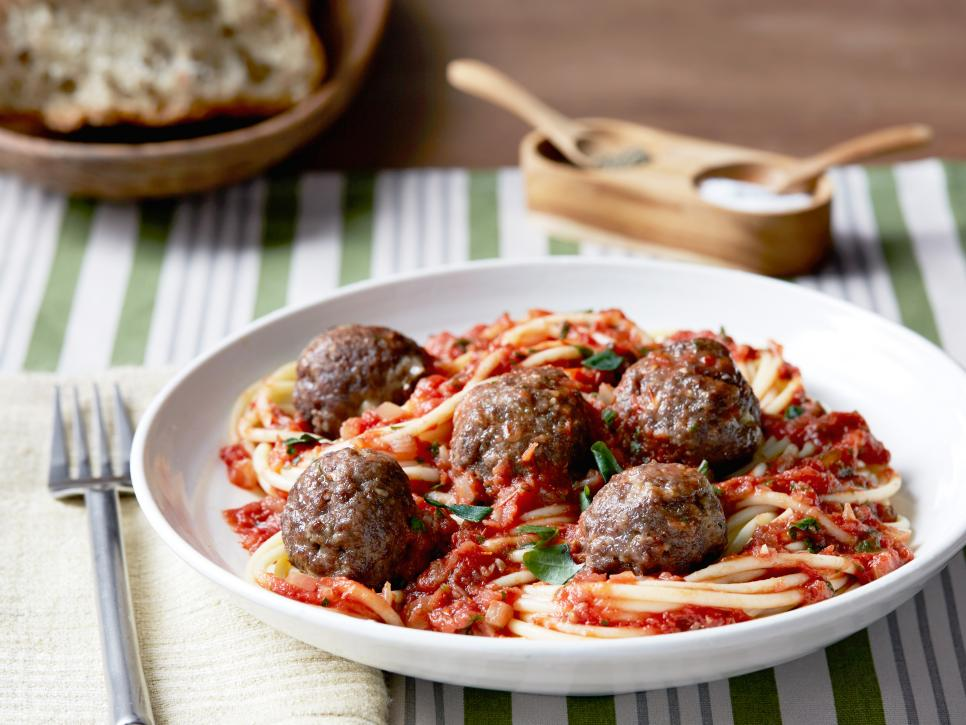

Spaghetti and Meatballs

Ingredients
- 1 pound spaghetti
- Salt, for pasta water
Meatballs
- 1 1/4 lb ground sirloin
- 2 tsp Worcestershire sauce
- 1/2 cup italian bread crumbs
- 1/4 cup grated parmesan
- 2 cloves garlic, chopped
- salt and pepper
Sauce
- 2 tbsp olive oil
- 1/2 tsp crushed red pepper flakes
- 1 small onion, chopped
- 4 cloves garlic, crushed or chopped
- 1 cup beef stock
- 1 can crushed tomatoes
- 10 basil leaves, sliced or torn
Steps
- Preheat oven to 425 degrees F.
- Place a large pot of water on to boil for spaghetti. When it boils, add salt and pasta and cook to al dente.
- Mix beef and Worcestershire, egg, bread crumbs, cheese, garlic, salt and pepper. Roll meat into 1 1/2 inch medium-sized meatballs and place on nonstick cookie sheet or a cookie sheet greased with extra-virgin olive oil. Bake balls 10 to 12 minutes, until no longer pink.
- Heat a deep skillet or medium pot over moderate heat. Add oil, crushed pepper, garlic and finely chopped onion. Saute 5 to 7 minutes, until onion bits are soft. Add beef stock, crushed tomatoes, and herbs. Bring to a simmer and cook for about 10 minutes.
- Toss hot, drained pasta with a few ladles of the sauce and grated cheese. Turn meatballs in remaining sauce. Place pasta on dinner plates and top with meatballs and sauce and extra grated cheese. Serve with bread or garlic bread (and some good chianti!)
Other Recipes